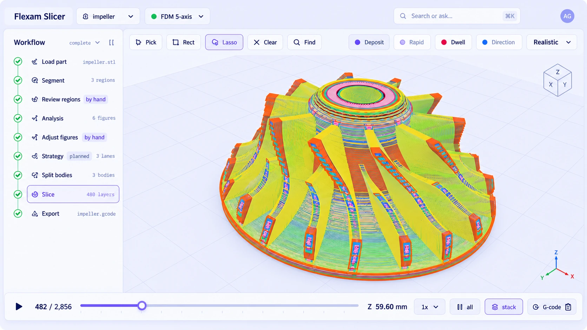

Flexam
At Flexam, a Vienna company building software for industrial additive manufacturing, I develop the path from a 3D model to a robot-ready, multi-axis toolpath: segmenting the part, slicing it, generating toolpaths and G-code, and building the web tools engineers use to inspect and adapt the result.
- 3D Printing
- 3D Segmentation & Geometry
- Toolpaths & G-code
- Go
- Rust
- Python